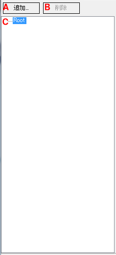

お使いのブラウザは JavaScript が使用できないため、本ドキュメントの一部機能が無効になっています。
JavaScript が無効の環境では目次を使用することができません。JavaScriptの実行が許可された状態で閲覧してください。
以下は「ツリービュー」の UI 説明です。

選択中のノードに子ノードを追加します。選択中のノードの種類によって追加できるノードの種類が異なります。BitmapFontノードとScalableFontDescriptionノードはFontノードを子ノードに持った状態で追加されます。子ノードを追加できないノードの種類も存在します。